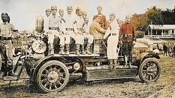
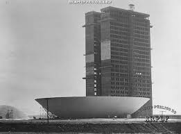
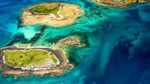

Bombeiros da antiga Grande São Paulo
Voltando à metade do Século XIX a capital paulista era completamente diferente desta cidade que estamos acostumados a ver hoje em dia. Pequena e com poucos habitantes, era natural que as ocorrências de sinistros como incêndios eram raros. Mas aconteciam.
Ler mais

64 anos de História
Brasília comemora 64 anos de História. Apesar da inauguração em 21 de abril de 1960, a história da capital federal começou oficialmente em 19 de setembro de 1956, quando o então presidente Juscelino Kubitschek assinou o documento de sanção da Lei 2.874 de 1956, que determinou a mudança de local e a construção da nova capital federal antes localizada no Rio de Janeiro (1763-1960).
Ler mais

o Arquipélago dos Abrolhos
No século XVI, quando um navegador se aproximava de um pequeno arquipélago na costa sul da Bahia, recebia o aviso: "abra os olhos". Os inúmeros corais existentes na região dificultavam a navegação e eram responsáveis por frequentes acidentes e naufrágios. A advertência acabou batizando o arquipélago de Abrolhos, que se tornou o primeiro Parque Nacional Marinho da América do Sul. Das cinco ilhas que formam o arquipélago Siriba, Redonda, Guarita, Sueste e Santa Bárbara somente esta última fica fora do Parque e pertence à Marinha do Brasil. Devido aos vários acidentes, em 1861 foi instalado um farol na Ilha de Santa Bárbara, cuja estrutura é de ferro inglês, e as lentes e maquinário, franceses. Até algumas décadas atrás, o farol ainda funcionava movido a querosene. Hoje, sua iluminação é elétrica e tem um alcance de 32 milhas náuticas.
Ler mais